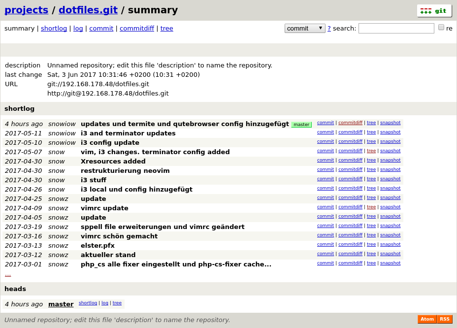
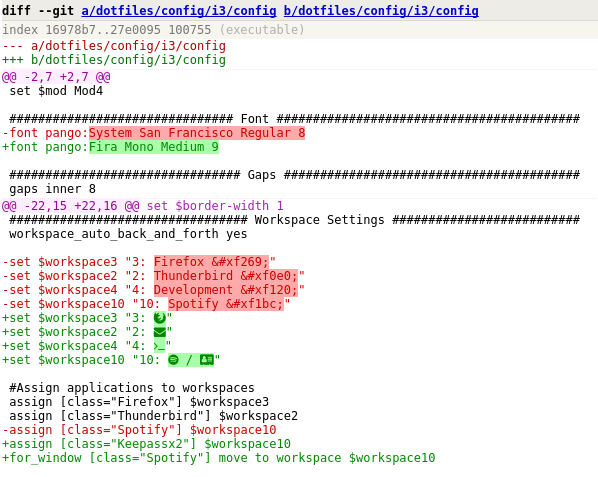

In this post I want to go into a topic, which I did a few months ago. My goal was to get some of my data away from big cloud hosting platforms back into my own control. The initial spark was a news about a french artist, who had all his pictures on googles platform blogger. His blog was deleted out of no reason and his whole work was lost. You can read the whole story here. Scared of a similar scenario, I decided to setup my own cloud with seafile and my own Git server. In this post I will cover how to put up a simple Git server with a basic web fronted to view the repositories. I still use GitHub pretty extensively but all my little and non private projects go onto my own Git server now. First things first, we need some hardware to get started:
- A Raspberry Pi 3 Model B (older models should be sufficient too, but the newer the more performance you got at your hand)
- 5V Micro USB Plug
- A Micro SD Card (the bigger, the better)
- A Raspberry PI 3 Case
- Another Computer to store an OS image on the SD Card (This guide shows the Linux way, but it should also be possible on Windows and OSX)
- An ethernet cable to initially connect your Raspberry Pi to your router
I also bought an external hard drive where all my Git repositories and cloud stuff is stored, but you can also buy a big SD-card and store the repositories on it directly. In this guide I will go about the default SD Card way. If you want to use an external hard drive, you need to format it to sda4 for example and mount it to the point, where you want to have it. All your Git repository directories should go there and the mount point will be your Git root. Otherwise the procedure is the same as given in this guide.
One last thing on the notations in this post. Because we need to execute many commands from the command line, I will use a short notion for which commands have to be executed as which user. If a line starts with the $ sign, the command is executable by a normal user. If you see a # in the beginning, you need to either execute the command with the sudo utility or be logged in as the root user.
Installing the OS on the SD-Card
I decided to use Arch Linux ARM for the Raspberry Pi, but you are free to use anything you want here. The reason why I chose Arch is because it’s a very minimal distribution. That said it only installs relevant software and from there you are free to go. A warning up front: We will never get to see a GUI, like in Raspbian or another Raspberry Pi distribution. On the plus side of things is, you will have much more RAM and processor performance for the software that really matters. My Raspberry Pi with Seafile and hosting the Git site on an nginx server is using around 200Mb/1GB of RAM and about 2% of one of the 4 processors on average. So there is plenty of stuff my Raspberry could do as well, without getting overwhelmed.
But let’s get back to the installation: First tricky thing here is to use the ARM7 Version. Even through the Raspberry Pi is listed as ARM8 I got huge problems to get my wireless up and running. So go and get the Arch Linux ARM7 here. Afterwards you need to follow the installation instructions here.
Configuring the OS
By now you should have installed Arch Linux ARM on the SD-Card, plugged it in and you should be logged into your Raspberry Pi (Don’t forget to connect your Raspberry Pi to your router if you want to connect via SSH). There were still some steps I needed to do to get started with my main project. Here is a short list:
Setting up Git
Now we can get started with our real project. First we need to install Git:
# pacman -S gitNext we create a new Git user, who will be responsible for the repositories:
# adduser -m -g git -s /bin/bash gitThe -m flag says that we want to create a user directory in /home. -g is the default group of our user and -s is the default shell of the user. We need to be able to do stuff as the Git user, that’s why he gets a shell. That’s it. Now you are basically ready to do Git stuff with your Raspberry Pi.
Create a new Git Repository
The next thing we want to do is create a new Git repository. Before we do anything Git related, we want to suspend ourselves as the Git user, like this:
# su gitNow we are the Git user and can do stuff in his name. First we need a place, where we want to place our repositories. A good place is the home directory of the Git user, but it can be anywhere else, where the Git user has write access. Now we create a new repository called new-project:
$ mkdir /home/git/new-project.git && cd /home/git/new-project.git && git init --bareFirst we create a new directory with a .git ending. You don’t need the ending, but it’s a best practice, to let server side repositories end with .git. Afterwards we go into that directory and initiate it as a Git repository. The bare argument is somewhat optional again, but also a best practice. It just means this Git repository doesn’t have a working directory. The working directory is where you put your files. On the same level is a .git directory with the history and other things in it. The bare argument now says that you don’t need the working directory and the main directory can become the .git directory. So overall you can remember to use the bare argument on the server side of a repository and not on the client side. # Clone your repo Now we want to clone our newly created repository from the server. You should already know the ip of your Raspberry, when you’ve set it up via ssh. If you don’t know the IP yet, you can run the command ifconfig as root, which should give you something like this as an output:
#ifconfig
eth0: flags=4099<UP,BROADCAST,MULTICAST> mtu 1500
ether b8:27:eb:8c:97:af txqueuelen 1000 (Ethernet)
RX packets 0 bytes 0 (0.0 B)
RX errors 0 dropped 0 overruns 0 frame 0
TX packets 0 bytes 0 (0.0 B)
TX errors 0 dropped 0 overruns 0 carrier 0 collisions 0
lo: flags=73<UP,LOOPBACK,RUNNING> mtu 65536
inet 127.0.0.1 netmask 255.0.0.0
inet6 ::1 prefixlen 128 scopeid 0x10<host>
loop txqueuelen 1 (Local Loopback)
RX packets 1004803 bytes 352750188 (336.4 MiB)
RX errors 0 dropped 0 overruns 0 frame 0
TX packets 1004803 bytes 352750188 (336.4 MiB)
TX errors 0 dropped 0 overruns 0 carrier 0 collisions 0
wlan0: flags=4163<UP,BROADCAST,RUNNING,MULTICAST> mtu 1500
inet 192.168.178.48 netmask 255.255.255.0 broadcast 192.168.178.255
inet6 fe80::ba27:ebff:fed9:c2fa prefixlen 64 scopeid 0x20<link>
ether b8:27:eb:d9:c2:fa txqueuelen 1000 (Ethernet)
RX packets 1727438 bytes 275330489 (262.5 MiB)
RX errors 0 dropped 1561 overruns 0 frame 0
TX packets 4660814 bytes 2524959215 (2.3 GiB)
TX errors 0 dropped 0 overruns 0 carrier 0 collisions 0As you can see in the output, I am connected via wifi. So the IP address of interest is under inet in the wlan0 block. If you are connected via cable, there should be an inet entry in the eth0 block. Now we know where to clone the repository from like this:
$ git clone git@<your-inet-entry-here>:/home/git/new-project.gitIn my case the command would look like this:
$ git clone git@192.168.178.48:/home/git/new-project.gitPush your first change
Let’s add a file with
$ touch test.txtNow you should have some changes, which you can check with
$ git statusNow we do our first commit and add the test file to our commit.
$ git commit -a -m "added test file" && git pushCongratulations! You first commit has landed on the server.
Initiate an existing project as a Raspberry Git repository
We pretty much covered everything which you need to know to work with your new Git server. But there is one last common use case, which I want to present to you. What if you were already working on a project and want to sync it with the server? First you have to switch into that directory and make it a Git repository like this.
$ cd /path/to/existing-project && git initSame thing on your Raspberry Pi. Create the directory with a .git ending and init it with the bare argument (remember to do this as the Git user)
$ cd /home/git/existing-project.git && cd /home/git/existing-project.git && git init --bareAfterwards your project files can be added to an initial commit like this (this happens on your work station again)
$ git commit -a -m "my first commit"So far there is nothing special. But now we add our Raspberry Pi as the remote server
$ git remote add origin git@<your-inet-entry-here>:/home/git/existing-project.gitAgain in my case the command would look like this and you have to change it to your case accordingly
$ git remote add origin git@192.16.178.48:/home/git/existing-project.gitNow you can push your fist changes and set the Raspberry Pi as the default origin like this
$ git push --set-upstream origin masterYou are also able to name origin anything you want. Origin is just a convention which is used for the default upstream. This was the main part, which should get you up to speed with Git on a Raspberry Pi. In the next chapter I want to show you, how to set up a simplistic Git web frontend to watch your repositories, commits and diffs in the web browser.
Create a Website to view your repositories
The feature we are are using is the built in gitweb. It’s a minimal web frontend to view your code and you should already have seen sites like this here and there. For example the project overview of my dotfiles repository looks like this:

First of all we need a running webserver, to host our Git site. We are going for nginx in this tutorial, but it’s also possible to use apache. To install nginx, we run
# pacman -S nginx-mainlineAfterwards we also need to install perl-cgi
# pacman -S perl-cgiNow we start the nginx service via systemd
# systemctl start nginxYou can check if the nginx server is running by looking up the ip address of your Raspberry Pi in your browser. In my case this would be navigating to 192.168.178.48. You should see a success message, that the nginx server is running. Because gitweb comes preinstalled with Git, we can directly go into activating the gitweb cgi script. Therefor we need to edit the /etc/nginx/nginx.conf
server {
listen 80;
server_name localhost;
#charset koi8-r;
#access_log logs/host.access.log main;
#error_page 404 /404.html;
# redirect server error pages to the static page /50x.html
#
error_page 500 502 503 504 /50x.html;
location = /50x.html {
root /usr/share/nginx/html;
}
location /gitweb.cgi {
include fastcgi_params;
gzip off;
fastcgi_param SCRIPT_FILENAME /usr/share/gitweb/gitweb.cgi;
fastcgi_param GITWEB_CONFIG /etc/gitweb.conf;
fastcgi_pass unix:/var/run/fcgiwrap.sock;
}
location / {
root /usr/share/gitweb;
index gitweb.cgi;
}
...
}As you can see in the code snippet, you need to add the gitweb.cgi location into the server entity and tell nginx where to find the fastcgi_params and pass. You also need to override the default location to be gitweb.cgi. All changes you need to do, are highlighted in yellow. Now we need to install fcgiwrap. This is a cgi server, which runs our gitweb cgi app.
# pacman -S fcgiwrapThen we need to add a service config for fcgiwrap to be able to start it via systemctl. Create the following file _/usr/lib/systemd/system/fcgiwrap.service _with this content
[Unit]
Description=Simple server for running CGI applications over FastCGI
After=syslog.target network.target
[Service]
Type=forking
Restart=on-abort
PIDFile=/var/run/fcgiwrap.pid
ExecStart=/usr/bin/spawn-fcgi -s /var/run/fcgiwrap.sock -P /var/run/fcgiwrap.pid -u http -g http -- /usr/sbin/fcgiwrap
ExecStop=/usr/bin/kill -15 $MAINPID
[Install]
WantedBy=multi-user.targetNow we can enable and start the fcgiwrap server for nginx
# systemctl enable nginx fcgiwrap
# systemctl start nginx fcgiwrapHold with me, we are already done. The server is now able to run the gitweb cgi app on the root directory of the nginx server. The last thing, we need to do is giving gitweb the root directory, where it can find our repositories and set the URL according to the Git IP, which we used earlier. To configure these things we open up /etc/gitweb.conf and set the content like this:
our $git_temp = "/tmp";
# The directories where your projects are. Must not end with a slash.
our $projectroot = "/home/git";
# Base URLs for links displayed in the web interface.
our @git_base_url_list = qw(git://192.168.178.48 http://git@192.168.178.48);
#Syntax Highlighting
$feature{'highlight'}{'default'} = [1];The tmp folder can stay as it is. The project root is the home directory of our Git user. You need to edit the Git URLs according to your Raspberry’s IP address, if it differs to mine. The last option enables highlighting of the shown source code on the Git web site, which looks like this

A final restart is required for the changes to take effect
# systemctl restart nginxNow you can navigate the IP of your Raspberry Pi again, like when you were checking if the nginx server was running. You should now see your very own gitweb frontend.